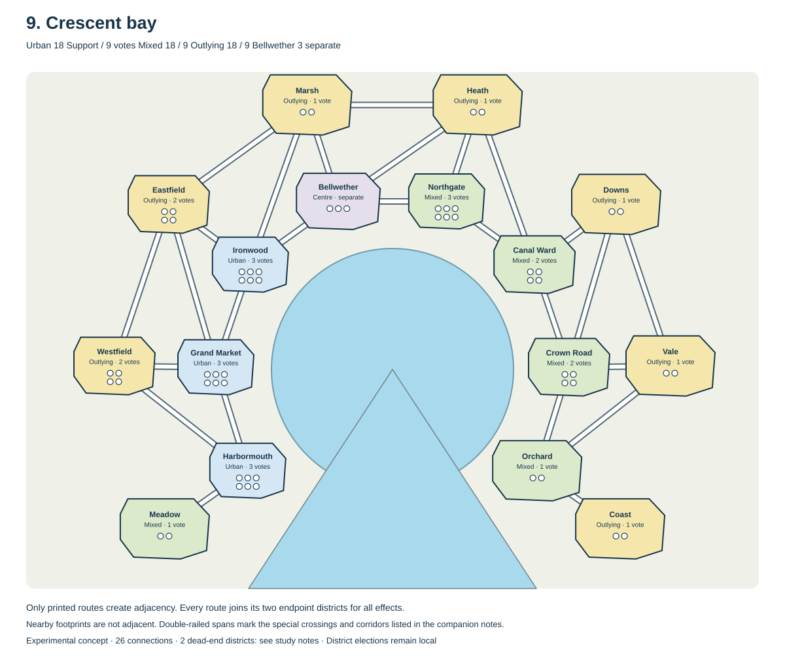

Concept 9
Crescent bay
An inner coastal route and an outer inland route follow the same broad bay. Connections between them allow players to change approach without crossing water.

How to read this map
Only printed routes create adjacency, for every effect. A route joins its two endpoint districts. Nearby footprints, touching terrain, and visual proximity across water create no additional connection. White roads with dark edges show ordinary routes; double-railed spans mark the special crossings and corridors listed below. There are no unmarked route intersections.
This explicit-route convention deliberately differs from the earlier shared-border maps. Each map retains the same 15 regional districts, three regions of 18 Support (up to 9 votes each), and Bellweather with 3 separate Support. Elections still happen district by district. No travel costs, changing water levels, gate ownership, or other special mechanics are assumed.
Deliberate departures
The shoreline remains open and unbridged. Districts occupy two curved bands, with Bellweather one stop on the coastal band.
What to watch in play
The outer band may become a faster bypass if its connections let players skip too many coastal districts.
What the connections imply
This map has 26 connections. Bellweather connects to Ironwood, Northgate, Marsh, Heath.
One-route destinations: Meadow, Coast. These intentionally remain available for testing protected destinations; they depart from the earlier no-dead-ends preference.
Sole gateways in the printed graph: Harbormouth, Canal Ward, Orchard. Removing any one of these districts would disconnect part of the map. That is a structural vulnerability, not a rule that occupying a district automatically blocks travel.
Connections without an alternative route: Orchard–Coast; Harbormouth–Meadow. These are the routes to watch for excessive dependence.
Scoring regions split across travel areas: Mixed: 2 separate groups; Outlying: 3 separate groups. Travelling between those groups requires entering another scoring region.
These checks describe the printed graph. Occupied Support spaces and the cost of establishing party presence can still make a route difficult to use.
Inspect every district and its neighbors
| District | Scoring region | Support / votes | Connected districts |
|---|---|---|---|
| Harbormouth | Urban | 6 / 3 | Grand Market, Meadow, Westfield |
| Grand Market | Urban | 6 / 3 | Harbormouth, Ironwood, Westfield, Eastfield |
| Ironwood | Urban | 6 / 3 | Grand Market, Eastfield, Marsh, Bellweather |
| Bellweather | Centre | 3 / separate | Ironwood, Northgate, Marsh, Heath |
| Northgate | Mixed | 6 / 3 | Canal Ward, Heath, Bellweather |
| Canal Ward | Mixed | 4 / 2 | Northgate, Crown Road, Heath, Downs |
| Crown Road | Mixed | 4 / 2 | Canal Ward, Orchard, Downs, Vale |
| Orchard | Mixed | 2 / 1 | Crown Road, Vale, Coast |
| Meadow | Mixed | 2 / 1 | Harbormouth |
| Westfield | Outlying | 4 / 2 | Harbormouth, Grand Market, Eastfield |
| Eastfield | Outlying | 4 / 2 | Grand Market, Ironwood, Westfield, Marsh |
| Marsh | Outlying | 2 / 1 | Ironwood, Eastfield, Heath, Bellweather |
| Heath | Outlying | 2 / 1 | Northgate, Canal Ward, Marsh, Bellweather |
| Downs | Outlying | 2 / 1 | Canal Ward, Crown Road, Vale |
| Vale | Outlying | 2 / 1 | Crown Road, Orchard, Downs |
| Coast | Outlying | 2 / 1 | Orchard |